MRPT GraphSLAM · 001
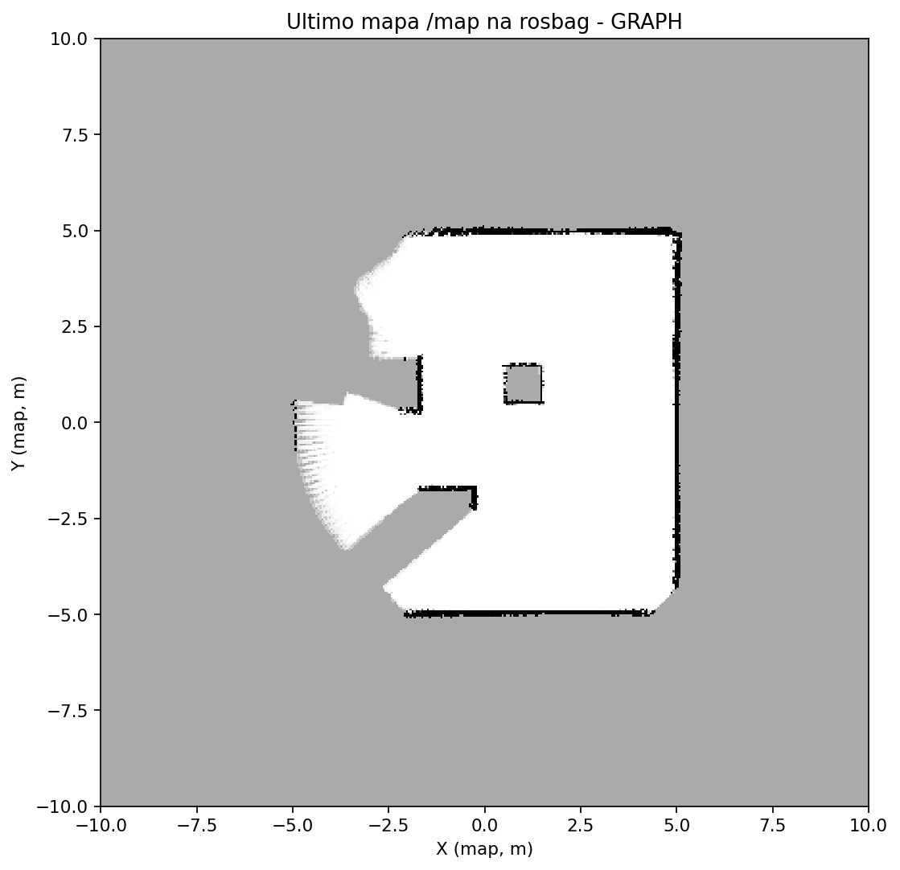
Duração analisada: 180.0 s
3 experimentos: 001, 002, 003 · Gerado em 12/11/2026 14:42
Janela comum para curvas: 180.00 s. Valores finais: são aqueles calculados individualmente em cada experimento.
Valores destacados em verde representam somente o melhor valor numérico do indicador (quando aplicável), não uma conclusão geral sobre qual SLAM é superior.
| Métrica | MRPT GraphSLAM · 001 | MRPT RBPF-SLAM · 002 | MRPT EKF-SLAM · 003 |
|---|---|---|---|
| ATE posição — RMSE (m) | 2.871 | 0.211 | 0.050 |
| ATE angular — RMSE (°) | 81.274 | 12.318 | 4.365 |
| RPE translação (1 s) (m) | 0.444 | 0.146 | 0.002 |
| RPE translação (5 s) (m) | 1.368 | 0.196 | 0.005 |
| RPE translação (10 s) (m) | 2.057 | 0.251 | 0.009 |
| Expansão da área conhecida (m²) | — | 94.740 | 42.120 |
| Taxa média de mapeamento (m²/s) | — | 0.526 | 0.234 |
| Expansão por distância (m²/m) | — | 7.258 | 5.080 |
| Metas enviadas | 3.000 | 2.000 | 2.000 |
| Metas alcançadas | 1.000 | 1.000 | 1.000 |
| Metas falhas | 1.000 | 0.000 | 0.000 |
| Metas sem resultado | 1.000 | 1.000 | 1.000 |
| Duração solicitada (s) | 180.000 | 180.000 | 180.000 |
| Duração analisada (s) | 180.000 | 180.000 | 180.000 |
Comparação descritiva entre execuções. ATE/RPE menores indicam menor erro; mais área conhecida não garante melhor qualidade geométrica.
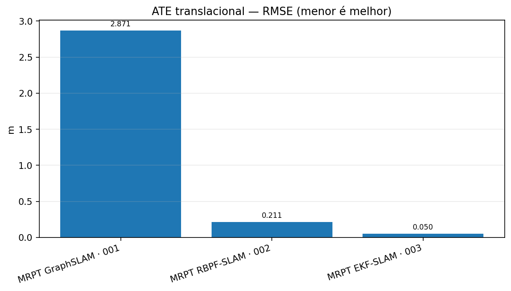
Comparação descritiva entre execuções. ATE/RPE menores indicam menor erro; mais área conhecida não garante melhor qualidade geométrica.
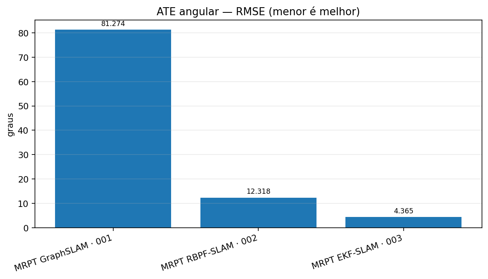
Comparação descritiva entre execuções. ATE/RPE menores indicam menor erro; mais área conhecida não garante melhor qualidade geométrica.
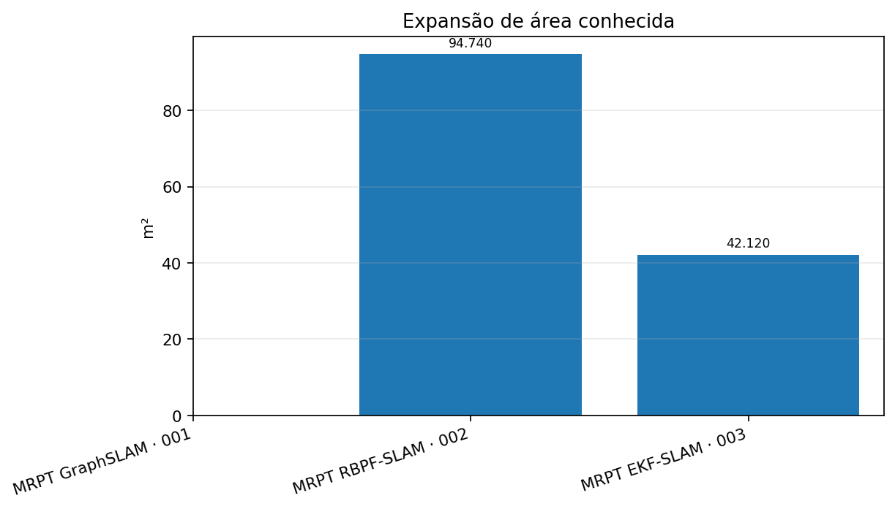
Comparação descritiva entre execuções. ATE/RPE menores indicam menor erro; mais área conhecida não garante melhor qualidade geométrica.
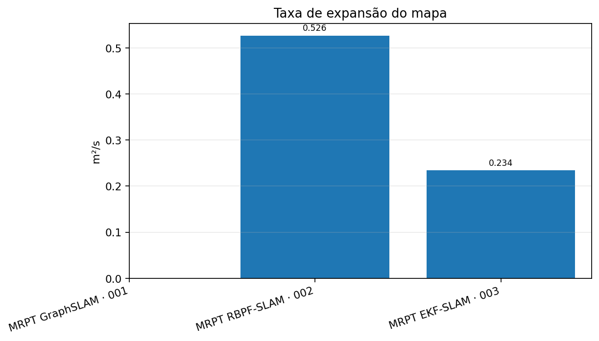
Comparação descritiva entre execuções. ATE/RPE menores indicam menor erro; mais área conhecida não garante melhor qualidade geométrica.
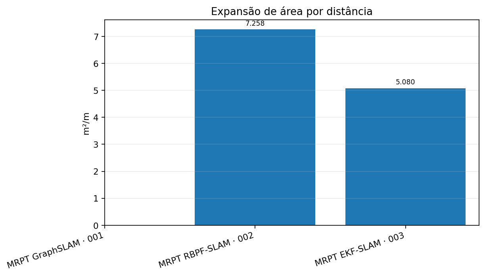
Erro relativo calculado em intervalos de 1, 5 e 10 segundos. Menor RMSE indica maior consistência local.
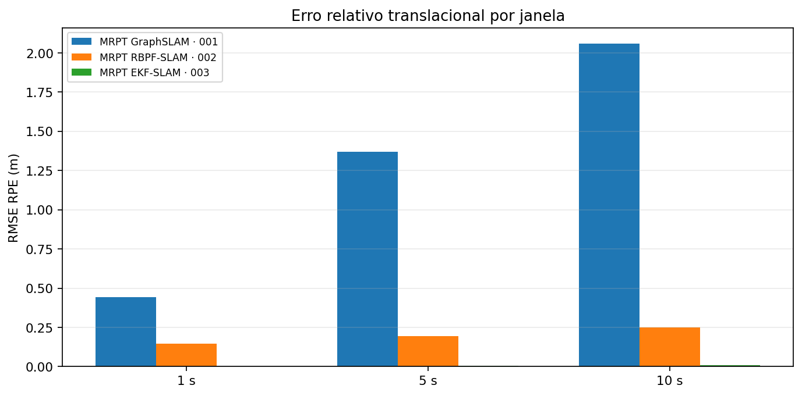
Curvas alinhadas por tempo relativo; a área conhecida não representa diretamente precisão cartográfica.
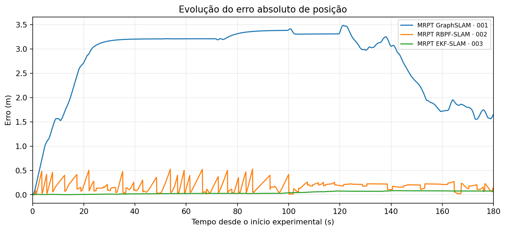
Curvas alinhadas por tempo relativo; a área conhecida não representa diretamente precisão cartográfica.
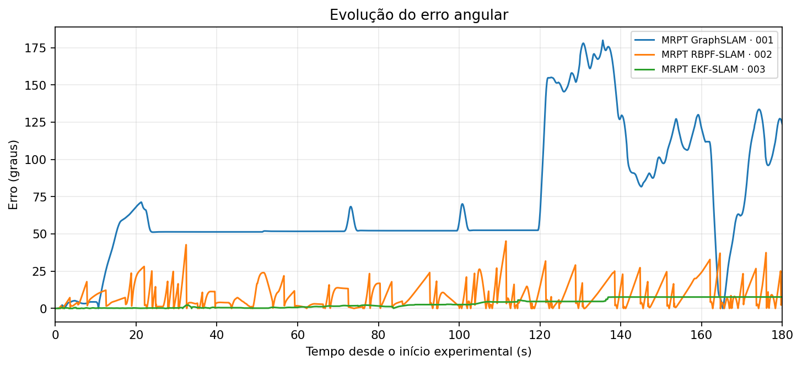
Curvas alinhadas por tempo relativo; a área conhecida não representa diretamente precisão cartográfica.
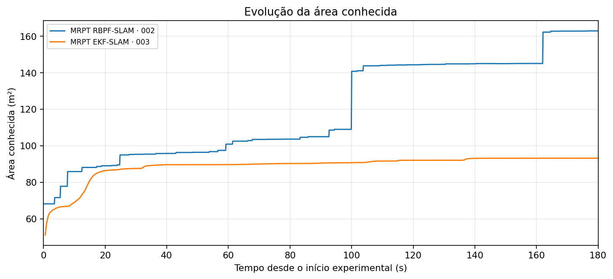
Metas sem resultado não devem ser contadas como sucesso. Contagens refletem a duração real de cada experimento.
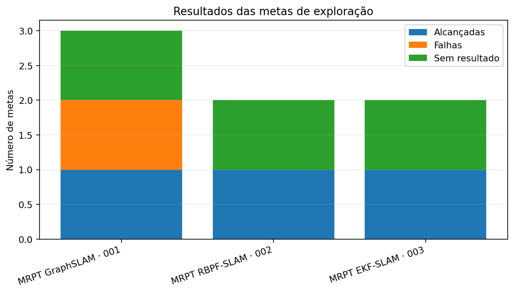
Imagens originais dos relatórios individuais; não são capturas da interface RViz2. Os referenciais de mapa podem ser distintos, portanto estas figuras são mostradas separadamente e não sobrepostas.

Duração analisada: 180.0 s
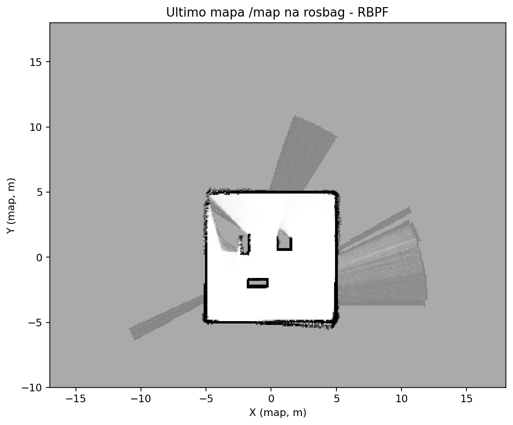
Duração analisada: 180.0 s
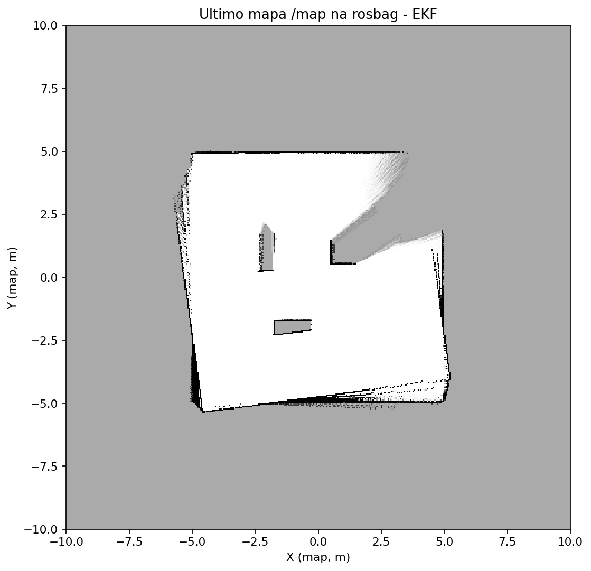
Duração analisada: 180.0 s
metricas_comparadas.csv reúne uma linha por experimento; metricas_por_indicador.csv organiza uma linha por indicador e execução. As imagens estão em graficos/.